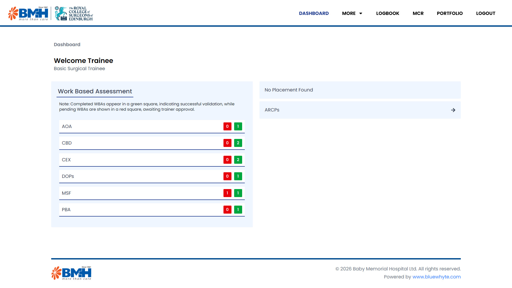
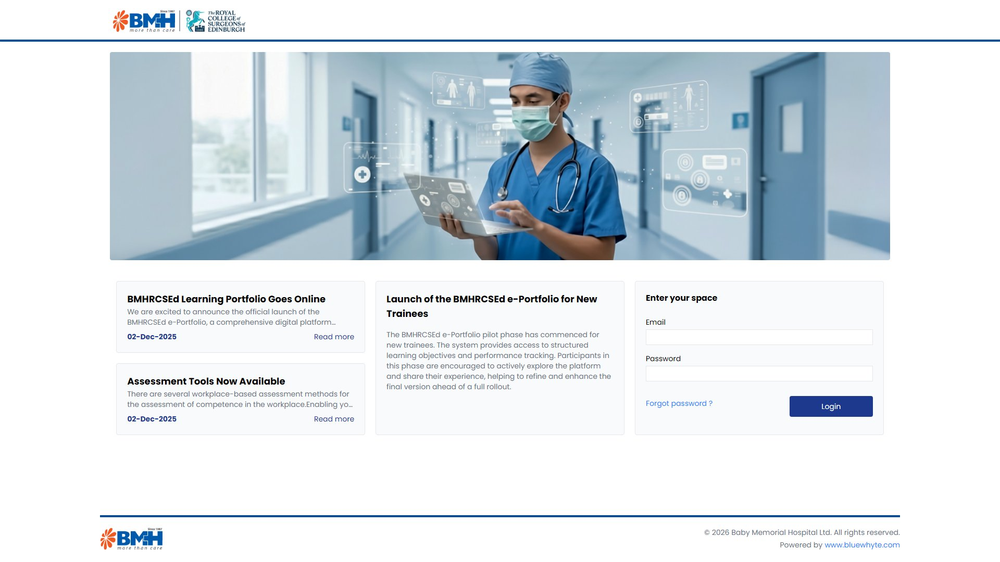

bmh-learning-portfolio
The BMHRCSEd Learning Portfolio: an online e-portfolio for surgical trainees at Baby Memorial Hospital, run with the Royal College of Surgeons of Edinburgh. Trainees record their training, supervisors review and sign it off, and programme directors follow everyone's progress in one place.
- year
- 2025
- status
- private code not public
- role
- front-end development
- stack
- laravel, react, vite

Why it was built
Surgical training runs on evidence: assessments, logbooks, reflections and supervisor feedback, collected over years and reviewed at each yearly progression check. On paper and in spreadsheets it is hard to see where a trainee stands. This portfolio puts the whole record online, so learning and sign-off happen in the same place.
How it works
- Four roles, each with its own dashboard: trainee, trainer, training programme director and admin.
- Trainees log workplace-based assessments: case-based discussions, direct observation of procedural skills, procedure-based assessments, clinical evaluations, audits and journal entries.
- Trainers see the trainees assigned to them, comment on their work and validate submissions.
- Learning agreements, placements, a surgical logbook and multi-source feedback from a chosen panel of colleagues.
- It all builds up to the Annual Review of Competence Progression (ARCP), where a panel reviews the year.
- A Laravel REST API behind a React single-page app. Admins manage hospitals, specialties, programmes, news and batch promotions.
